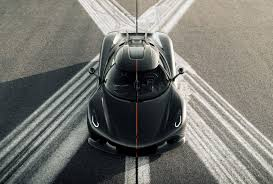

| Product |
Description |
Price |
Availability |

BMW M5 CS |
Engine: Powered by a tuned 4.4-liter twin-turbo V8, producing 627
horsepower (an increase of 10 hp over the Competition).
Performance: It can sprint from 0 to 60 mph in just 2.9 seconds and
has a top speed of 190 mph (electronically limited).
Weight Reduction: The CS model is approximately 230 lbs (70 kg)
lighter than the M5 Competition, thanks to extensive use of Carbon
Fiber Reinforced Plastic (CFRP) for components like the hood, front
splitter, rear spoiler, and diffuser, and the use of carbon ceramic
brakes as standard.
Design: It features exclusive accents in Gold Bronze (around the
kidney grille and on the wheels) and unique yellow running lights,
giving it a distinctive appearance.
Interior: It features a unique four-seat layout with carbon bucket
seats in both the front and rear, emphasizing its performance
orientation.
|
$250000 |
In Stock |

Bugatti Divo |
The Bugatti Divo is an ultra-exclusive, track-focused hypercar based
on the Bugatti Chiron. It's named after French racing driver Albert
Divo and was designed with a heavy emphasis on aerodynamics and
cornering agility rather than outright top speed. Key features
include:
Engine: The same monstrous 8.0 L quad-turbocharged W16 engine
as the Chiron, producing 1,500 hp.
Performance: It generates
significantly more downforce (456 kg) and is eight seconds faster than
the Chiron around the Nardò handling circuit, though its top speed is
electronically limited to 380 km/h.
Design & Exclusivity: It features
highly distinctive bodywork—including a massive 1.8 meter fixed rear
wing—and is 35 kg lighter than the Chiron Sport.
|
$4500000 |
In Stock |

Koenigsegg Jesko Absolut |
The Koenigsegg Jesko Absolut is the ultimate top-speed variant of the
Jesko megacar, specifically engineered to break world speed records.
It is defined by its extreme focus on aerodynamics, featuring an
elongated tail and the removal of the massive rear wing (replaced by
two streamlined fins) to achieve an incredibly low drag coefficient of
just 0.278 Cd. It is powered by a twin-turbo 5.0-liter V8 engine that
produces up to 1,600 hp on E85 biofuel, paired with the revolutionary
9-speed Light Speed Transmission (LST). Koenigsegg's simulations
suggest a theoretical top speed exceeding 330 mph (over 531 km/h),
making it the brand's fastest road-legal car ever built.
|
$3500000 |
In Stock |

Mclaren P1 |
It combines a 3.8-liter twin-turbo V8 engine with a powerful electric
motor to produce a combined output of 903 horsepower, enabling a 0-62
mph time of about 2.8 seconds and an electronically limited top speed
of 217 mph. Built around a lightweight carbon fiber MonoCage chassis,
its design is defined by advanced active aerodynamics, including an
adjustable rear wing that provides high levels of downforce, mimicking
the technology of a Formula 1 racing car. Production was strictly
limited to 375 units between 2013 and 2015, establishing it as one of
the most exclusive and technologically advanced vehicles of its era.
|
$2000000 |
In Stock |